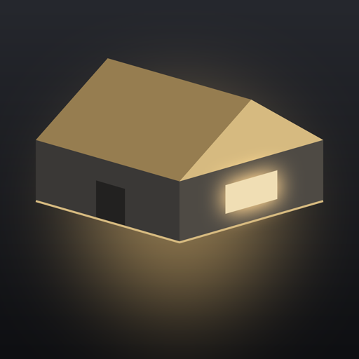

Haven
מה יש בה
- מודל תלת-ממדי של הבית: חדרים, ריהוט, גינה, גגות, מבנים נוספים והרחוב, ובכל רגע רואים מה דלוק ומה פתוח
- שליטה במכשירי HomeKit ו-Matter, וגם Switcher, Shelly, Tuya / Smart Life, eWeLink, Miele ו-PalGate
- מצלמות: צפייה חיה, אירועים והתראות
- שלט לטלוויזיית Samsung, כולל עוצמה מדויקת
- הכרזות בעברית בהום פוד כשמשהו קורה בבית
- אוטומציות לפי שעה, זריחה ושקיעה ומצב הבית
- עוזר שמסדר חדרים, משבץ מכשירים ומבצע פקודות
- גיבוי ושחזור של כל ההגדרות
בלי חשבון ובלי איסוף נתונים: המידע על הבית נשמר רק אצלך. מדיניות הפרטיות.
Your smart home, in 3D
Haven brings your whole smart home into one app for iPhone, iPad, Mac and Apple Watch: a live 3D model of your home, HomeKit and Matter accessories plus Switcher, Shelly, Tuya, eWeLink, Miele and PalGate, cameras, a Samsung TV remote, Hebrew HomePod announcements, automations and an assistant. No account, no data collection.